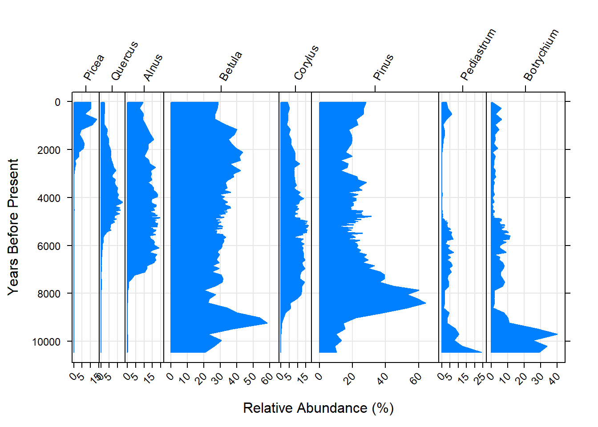
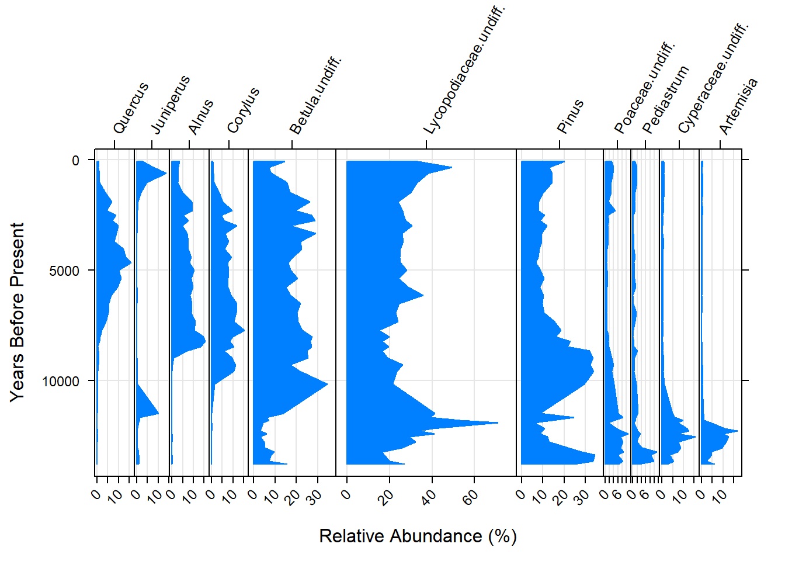

The Story Pollen Tells Us
A Brief Examination of southern Swedish Palynological Data
Nathan Dubinin
Introduction
Pollen diagrams offer a visualization of past landscapes. They can tell a story about the past which entails human activity and climatic events. In the past decade, R has become a powerful tool with statistical analyses, and data visualization in scientific research. Due to its prevalence, R has become the norm within scientiic research transcending disciplines. This is partly because it is tremendously powerful as a visualization tool and allows for reproducible results.
The purpose of this project is to create a series of pollen diagrams which will visualize ancient pollen data in southern Sweden. While examining the pollen data, we can start to ask questions. Two questions will be asked for this project. What narratives can be told examining pollen diagrams? Does the story glean any information pertaining to climatic events or cultural transformation of landscape?
Methods
A series of packages are employed to make pollen diagrams. These consist of the ‘analogue’ and ‘neotoma’ packages. They allow for the simple creation of diagrams or profiles to view. You can use ‘ggplot2’ to create pollen diagrams, but is beyond the scope of this project. It is however useful to know that there are many options in creating pollen diagrams.
A series of arguements are used, with vectors representing the y and x axis, where the y-axis will represent time or sediment depth (depnding on specific data) and the x-axis representing the relative abundance as a percentage of a given species. ‘There are several plot types that are built into ’analogue,’ so ggplot can still be used, but is not necessry. Pollen data may be directly downloaded from online. The Neotoma databases’s API and package ‘Neotoma’ allows for easy access to pollen data originally hosted by the European Pollen Database. The database explorer also allows for advanced searches that can narrow down pollen data within time and space. This particular feature makes it easy to find datasets associated with a particular country.
Below are the packages that need to be installed:
# packages:
library(permute)
library(lattice)
library(vegan)## This is vegan 2.5-3library(neotoma)
library(analogue)## analogue version 0.17-1Five sites have been chosen in southern Sweden: Lake Sambösjön, Lake Flarken, Dags Mosse, Mabo Moss, Kansjon
The following code illustrates how you can get pollen data using the API of the Neotoma Paleoecology Database. Lake Sambösjön will be used and can be a template to replicate other diagrams with other pollen data.
The lines of code below represent data being fetched from the Neotoma API.
The “get_site” returns information from the Neotoma Database.
The “get_dataset” function allows for acsess to the API and to return datasets associated with a particular site. *The “get_download” allows for the return of the download which is associated either with a dataset ID, site object or dataset object.
sam <- get_site(sitename = 'Lake Sambösjön')## The API call was successful, you have returned 1 records.sam_pollen=get_dataset(sam)
sam_data=get_download(sam_pollen)## API call was successful. Returned record for Lake Sambösjön
## API call was successful. Returned record for Lake Sambösjön## The dataset ID 9172 is associated with a geochronology object, not count data.## Warning in get_download.default(datasetid, verbose = verbose): Some datasetids returned empty downloads, be aware that length(datasetid) is longer than the download_list.After the data has been downloaded through the API relative percentages can be calculated. This is because most pollen data does not have percentages of pollen, rather counts. The EPD’s data policy requires that their data have pollen counts and exclude any percentages.
Pollen diagrams show relative abundance as a percent along the x-axis of the diagram. The next few lines of code illusrate how percentages are calculated from the pollen data.
The “tran” function in ‘analogue’ has many options to transform or standardize data. In the following case, “tran” will be used to convert the counts of every taxa or group of vegetation using the “method = ‘percent’” argument. The second line of code is assigning the calibrated radiocarbon age from the pollen data. *The final line in this code chunk is using the “chooseTaxa” function with two arguments: 1. Using the sam.core.pct as the object. 2. Using “max.abun” to set the lower limit of percentages. In this case anything less than ten percent will be excluded.
sam.core.pct <- data.frame(tran(sam_data[[1]]$counts, method = 'percent'))
sam.age <- sam_data[[1]]$sample.meta$age
sam.core.pct <- chooseTaxa(sam.core.pct, max.abun = 10)Now that the data for Lake Sambösjön has been adequately wrangled, the “Stratiplot” function can be used to create pollen diagrams. It is a simple function with a series of arguments: 1. object which is sam.core.pct data frame. 2. sort which deals with how variables on the x-axis are displayed, ‘wa’ represents weighted average. 3. type deals with what kind of shape or line does the diagram havee. For below, a vector was created with “poly”, representing a filled shape and “g” which represents a grid for reference.
4. ylab is the y-axis label 5. xlab is the x-axis label
Stratiplot(sam.age ~., sam.core.pct, sort = 'wa', type = c("poly", "g"), ylab = 'Years Before Present', xlab = 'Relative Abundance (%)')
Results
The following are a series of pollen profiles that represent five sites within southern Sweden. They consist of three lakes and two bogs. The diagrams will be useful in discussing possible cänlimactic trends through time given different species of vegetation.
Lake Sambösjön
“Lake. Physiography: lake. Surrounding vegetation: 10-15m broad and continuous Alnus belt.” (Neotoma)

Lake Flarken

Dags Mosse
“Raised Pinus-Sedum-Sphagnum bog. Physiography: tills and glaciofluvial depressions. Surrounding vegetation: Pinus-Betula (Picea) belt.” (Neotoma)

Mabo Moss
“Slightly raised Pinus-Ledum-Sphagnum bog. Physiography: Glaciofluvial deposits and tills. Surrounding vegetation: Pinus-Betula-Picea (Quercus).” (Neotoma)

Kansjon
“Lake. Physiography: Rolling till surface. Surrounding vegetation: Pinus, Betula.” (Neotoma)

Conclusions
Still working on the overall interpretation of the diagrams. However, pollen diagrams allow for a glimpse of how landscapes have changed through time. The R packagees used for this project illustrate the efficacy of creating simple and quick diagrams. There are however some limitations with the specific arguments. Furthermore, there are alos issues concerning pollen data that need to be adressed. The relative abundance is calculating the percentage of the pollen counts for each taxa. Relative pollen percentages may not mean that there is more of one taxa versus another. Some plants give off more or less pollen when compared to one another. Another issue that is discussed in Walanus & Nalepka (2013), is that a zero count does not necessarily mean that there was no pollen present for a specific taxa, rather it fell below a particular threshold when sampling at different levels of the core.
References and Data Sources
Data accessed from the European Pollen Database (EPD) via the Neotoma Paleoecology Database Explorer’s API.
Websites:
http://www.europeanpollendatabase.net/fpd-epd/bibli.do
http://apps.neotomadb.org/explorer/
https://CRAN.R-project.org/package=neotoma
https://CRAN.R-project.org/package=vegan
https://CRAN.R-project.org/package=lattice
https://CRAN.R-project.org/package=permute
https://CRAN.R-project.org/package=analogue
http://paleoecologie.umontreal.ca/
https://www.fromthebottomoftheheap.net/2011/06/08/stratigraphic-diagrams-using-analogue/
Articles:
Digerfeldt, G. 1982. The Holocene development of Lake Sambosjon. 1. The regional vegetation history. Lundqua Report, 23:1-24.
Digerfeldt, G. 1977. The Flandrian development of Lake Flarken. Regional vegetation history and palaeolimnology. University of Lund Department of Quaternary Geology. Report 13:1-101.
Göransson, H. 1991. Vegetation and man around Lake Bjärsjöholmssjön during prehistoric time. Lundqua Report 31. Data :
Mitchell, F. J. (2005). How open were European primeval forests? Hypothesis testing using palaeoecological data. Journal of Ecology, 93(1), 168-177.
Seppä, H., Hammarlund, D., Antonsson, K., Teknisk-naturvetenskapliga vetenskapsområdet, Uppsala universitet, Geovetenskapliga sektionen, & Institutionen för geovetenskaper. (2005). Low-frequency and high-frequency changes in temperature and effective humidity during the holocene in south-central sweden: Implications for atmospheric and oceanic forcings of climate. Climate Dynamics, 25(2), 285-297. doi:10.1007/s00382-005-0024-5
Walanus, A., & Nalepka, D. (2013). Information content of zero pollen counts in holocene profiles. The Holocene, 23(5), 732-738. doi:10.1177/0959683612465444